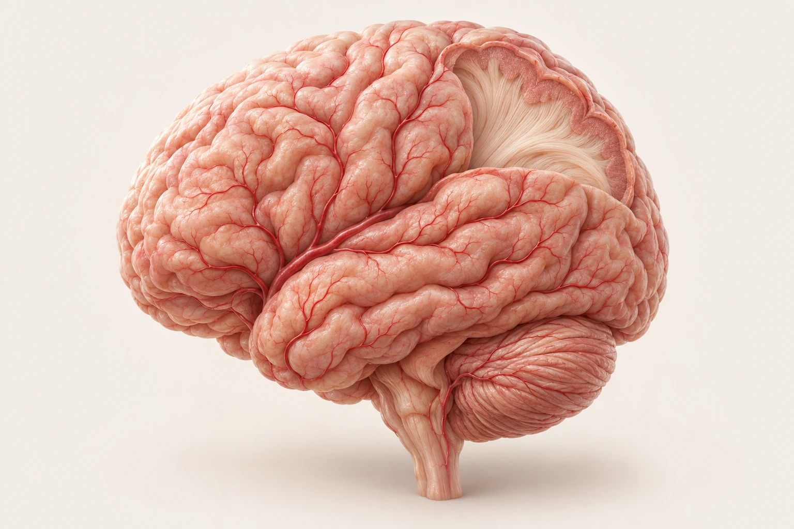

Кровоснабжение мозга
Как сосуды
поддерживают
работу памяти
За каждым воспоминанием стоит работа мозга. Ей необходим постоянный приток крови.

Общая учебная иллюстрация
01 / Мозг
Память требует энергии
Кровь доставляет кислород и питательные вещества, необходимые для работы нервных клеток.